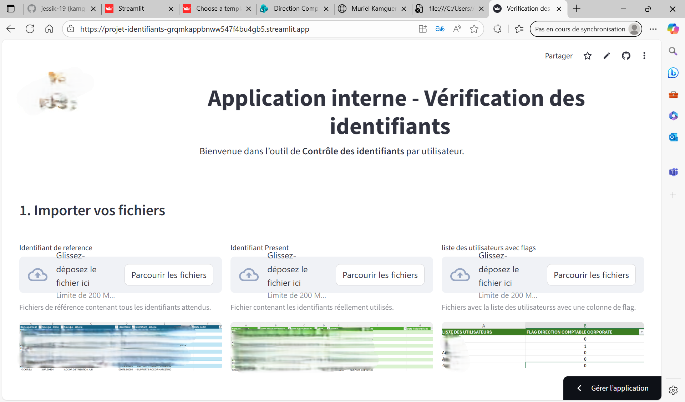
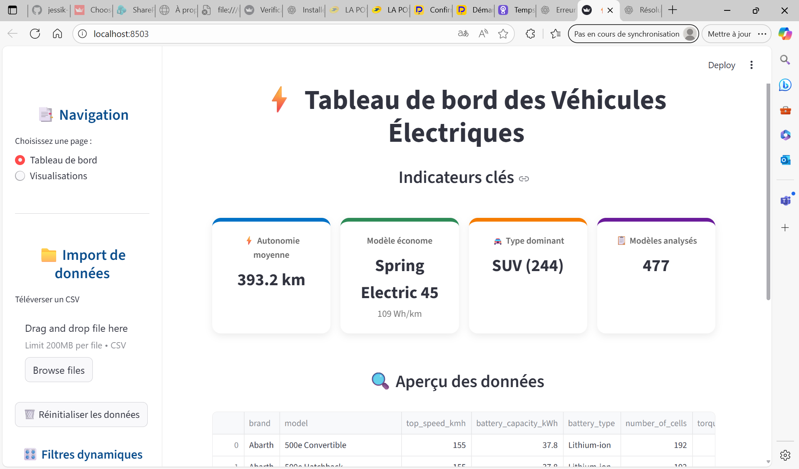

Applications et automatisations

Contrôle des identifiants utilisateurs
Objectif : Identifier les utilisateurs ne disposant pas de tous les identifiants attendus par profil. Application créée avec Streamlit pour vérification automatique via import de 3 fichiers.
Tech : Python (pandas), Streamlit, export Excel.
Voir le code

Vérification des responsabilités Grand Back
Objectif : Comparer les responsabilités attribuées aux utilisateurs avec celles attendues selon leur type de profil.
Tech : Streamlit, Python (merge, comparaison de fichiers), interface personnalisée avec CSS.
Voir le code

Automatisation des rapports PDF
Objectif : Génération automatique de rapports PDF mensuels depuis Power BI et envoi par mail via Power Automate.
Tech : Power BI, Power Automate, Outlook, export automatique.
Voir l’analyse complète

Qualité & Uniformisation – Tableaux Monday
Application interne permettant d’analyser la complétude, l’uniformisation et la cohérence des données issues des tableaux Monday.com (Pôles Finance, Cash & Consolidation).
Tech : Python (Pandas), Streamlit, Analyse de complétude, Data Quality, Export automatique.
Voir l’analyse complète